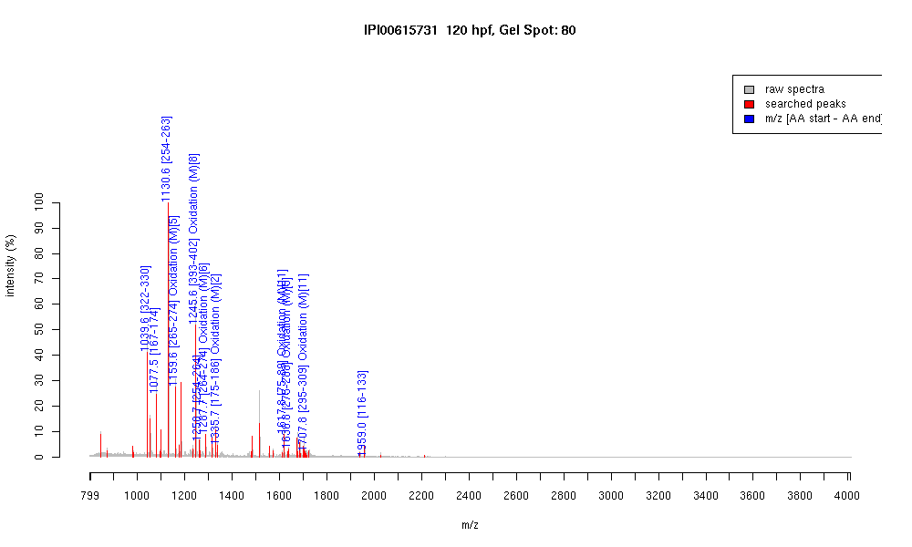

| Name | "PREDICTED: similar to tubulin, beta, 2isoform 3" |
|---|---|
| MW | 51068.6 |
| PI | 4.79 |
| Mascot Protein Score | 150 |
| Masses (matched / unmatched) | 12 / 50 |

| Peptide | MZ (calc) | MZ (observed) | Error (DA) | Error (PPM) | Start | Stop | Modifications |
|---|---|---|---|---|---|---|---|
| YLTVAAVFR | 1039.5935 | 1039.5957 | 0.0022 | 2 | 322 | 330 | |
| IREEYPDR | 1077.5323 | 1077.527 | -0.0053 | -5 | 167 | 174 | |
| FPGQLNADLR | 1130.5953 | 1130.5961 | 0.0008 | 1 | 254 | 263 | |
| LAVNMVPFPR | 1159.6292 | 1159.6173 | -0.0119 | -10 | 265 | 274 | Oxidation (M)[5] |
| ISEQFTAMFR | 1245.5933 | 1245.5812 | -0.0121 | -10 | 393 | 402 | Oxidation (M)[8] |
| FPGQLNADLRK | 1258.6902 | 1258.6904 | 0.0002 | 0 | 254 | 264 | |
| KLAVNMVPFPR | 1287.7241 | 1287.7139 | -0.0102 | -8 | 264 | 274 | Oxidation (M)[6] |
| IMNTFSVVPSPK | 1335.6978 | 1335.6787 | -0.0191 | -14 | 175 | 186 | Oxidation (M)[2] |
| AVLVDLEPGTMDSVR | 1617.8152 | 1617.8024 | -0.0128 | -8 | 75 | 89 | Oxidation (M)[11] |
| LHFFMPGFAPLTSR | 1636.8304 | 1636.8198 | -0.0106 | -6 | 275 | 288 | Oxidation (M)[5] |
| ALTVPELTQQMFDAK | 1707.8622 | 1707.8336 | -0.0286 | -17 | 295 | 309 | Oxidation (M)[11] |
| GHYTEGAELVDSVLDVVR | 1958.9817 | 1958.9885 | 0.0068 | 3 | 116 | 133 |